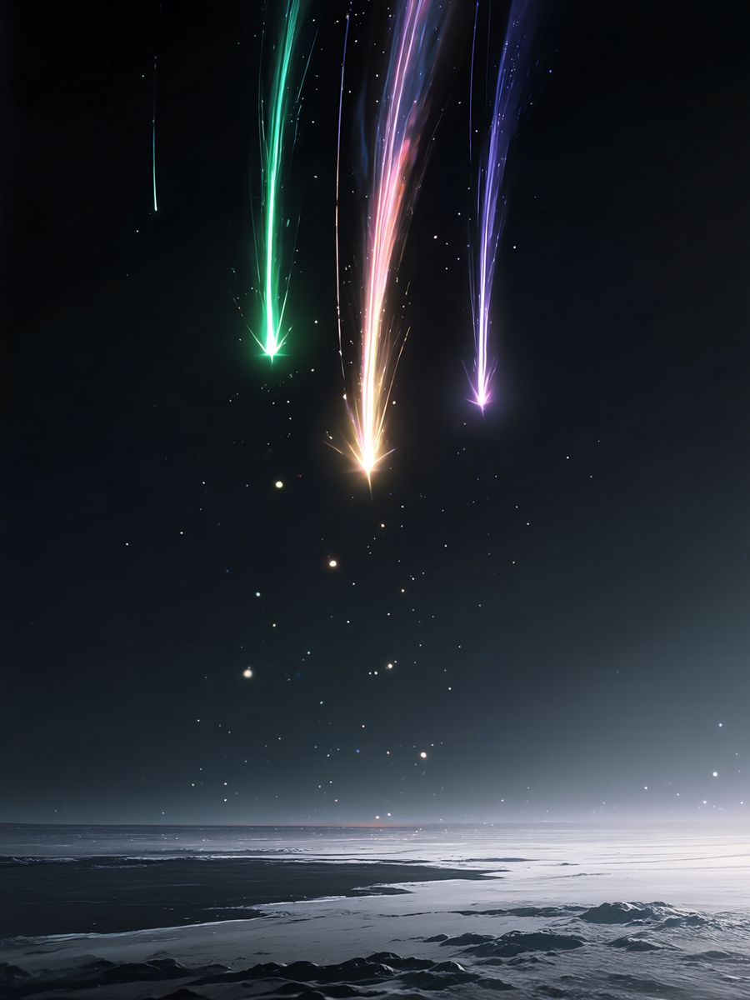
CHAPTER I · 無
세 개의 별이 떨어지다
빛도, 소리도, 이름을 가진 것도 없던 무(無)의 시절.
끝없는 어둠을 가르며 세 개의 별이 떨어졌다. 초록, 새벽빛, 보랏빛. 별에서 태어난 세 자매가 텅 빈 세상에 처음으로 발을 디뎠다.
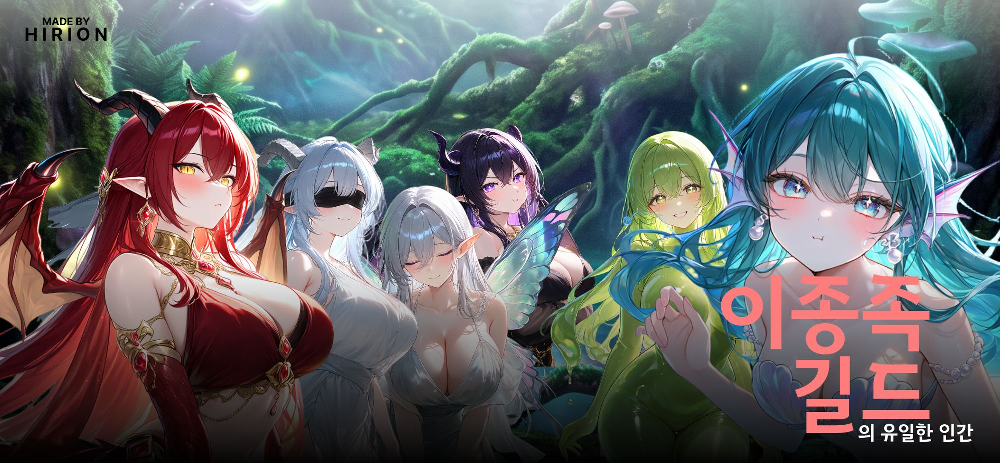
천 년 전, 세 여신의 시대가 끝났다. 지금 세상은 인간의 것이다. 빚 때문에 인류 최고 길드에 팔려 온 막내 짐꾼인 당신은, 어느 밤 마족 야시장에서 봉인된 여신의 힘을 얻는다. 인간에게 상처 입은 이종족들과 손을 잡을 수 있는, 단 하나의 인간이 된다.
이종족들 사이에서만 전설로 남은 이야기. 인간의 역사책에는 적혀 있지 않다.

빛도, 소리도, 이름을 가진 것도 없던 무(無)의 시절.
끝없는 어둠을 가르며 세 개의 별이 떨어졌다. 초록, 새벽빛, 보랏빛. 별에서 태어난 세 자매가 텅 빈 세상에 처음으로 발을 디뎠다.
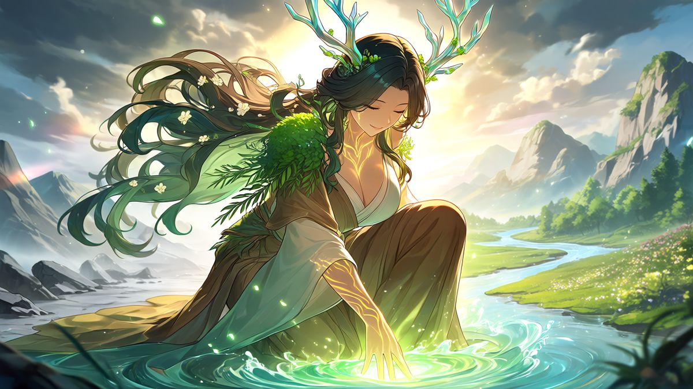
맏언니 가이아가 손바닥을 대자 산이 일어서고, 강이 흐르고, 숲이 숨을 쉬기 시작했다.
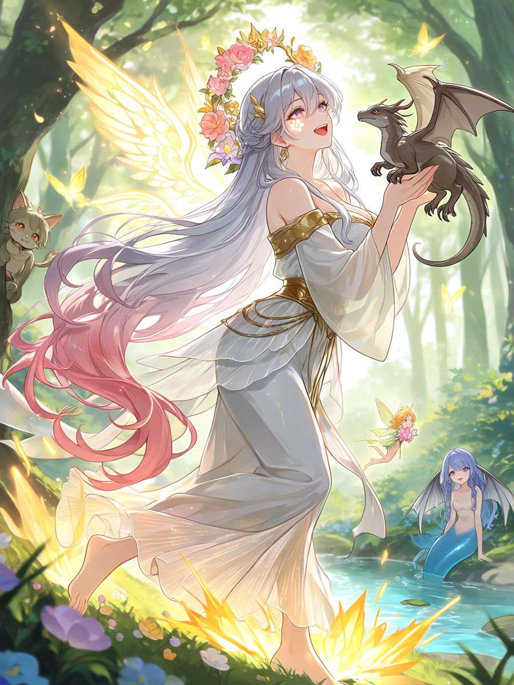
그 대지 위에서 둘째 에오라가 웃을 때마다 새로운 생명이 태어났다.
날개를 가진 이, 비늘을 가진 이, 꼬리를 흔드는 이, 물속에서 노래하는 이. 서른이 넘는 종족이 그렇게 세상에 왔다.
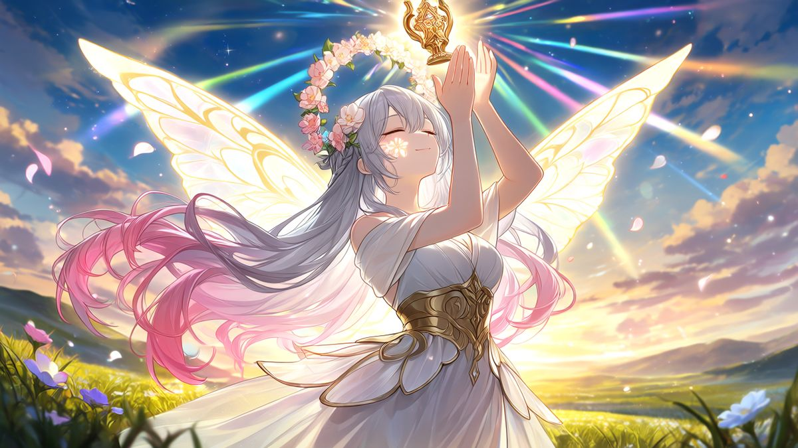
서로 다른 종족이 두려움 없이 사랑하고, 손을 잡고, 힘을 나눌 수 있게 하는 약속.
모두는 그것을 [만종의 맹약]이라 불렀다.
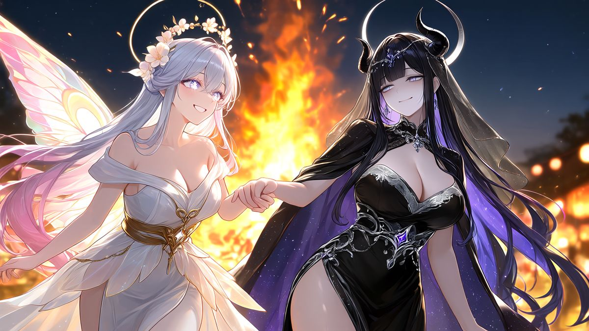
에오라는 늘 한 걸음 떨어져 있던 막내 닉스의 손을 잡아 불빛 속으로 이끌었다. 전설은 그것이 세 자매가 함께 웃은 마지막 밤이라고 전한다.
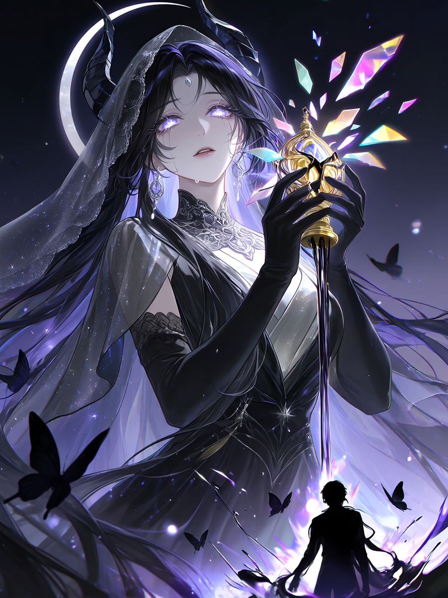
죽음을 맡은 막내는 언제나 두려움의 대상이었다. 어느 달 없는 밤, 닉스가 맹약에 손을 댔고 처음으로 죽음의 신이 생명을 빚었다.
수명은 짧고 나약하지만 누구보다 영악한 종족, 인간. 그날 맹약은 열다섯 개의 문장으로 부서져 각 종족에게 흩어졌다.
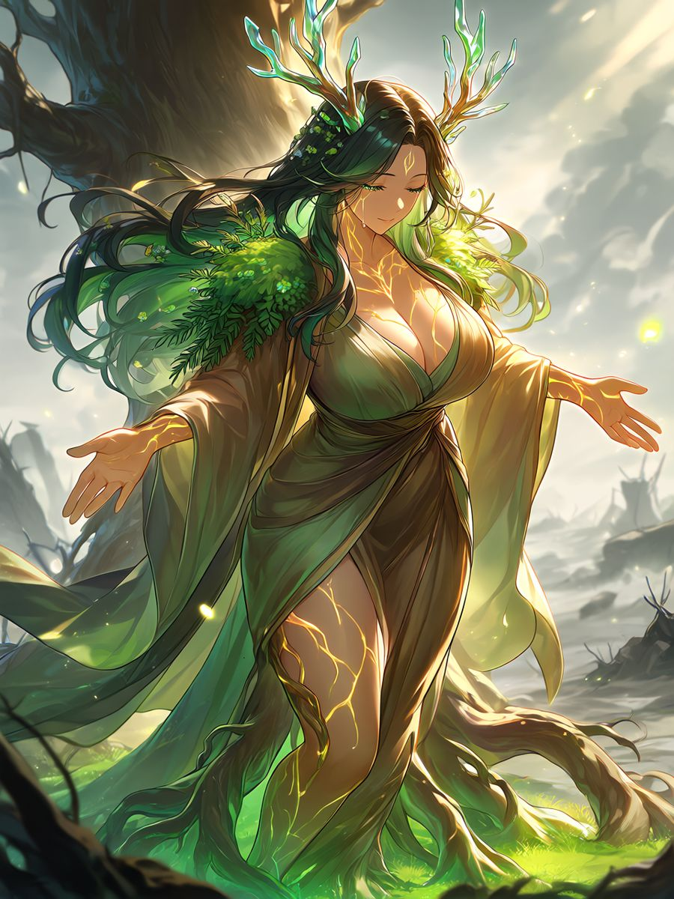
맹약을 잃은 종족들은 더는 손을 잡지 못했고, 인간이 그 위에 군림했다.
병들어 가는 대지를 끌어안고 가이아는 스스로 몸을 묻었다. 그 자리에서 하늘을 가리는 나무, 세계수 이그드라실이 자라났다.
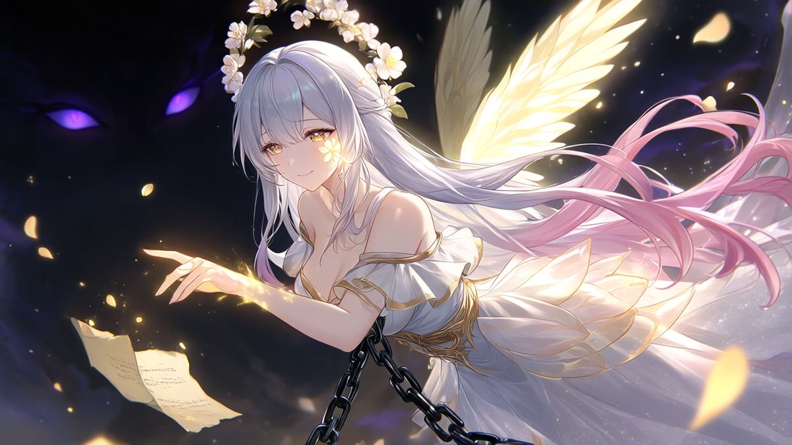
끝까지 맞선 에오라는 봉인되었다. 사라지기 직전, 남은 힘을 낡은 양피지 한 장에 담았다고 전해진다.
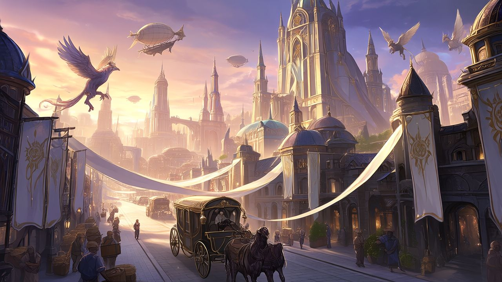
인외는 변방으로 쫓겨나거나 인간의 도시에서 가장 낮은 곳을 산다. 서른 넘는 종족이 그나마 섞여 사는 곳은 단 하나, 교역 도시 바벨하임뿐이다.
별에서 태어난 자매. 떨어지던 세 별의 빛깔이 지금도 그들을 상징한다.
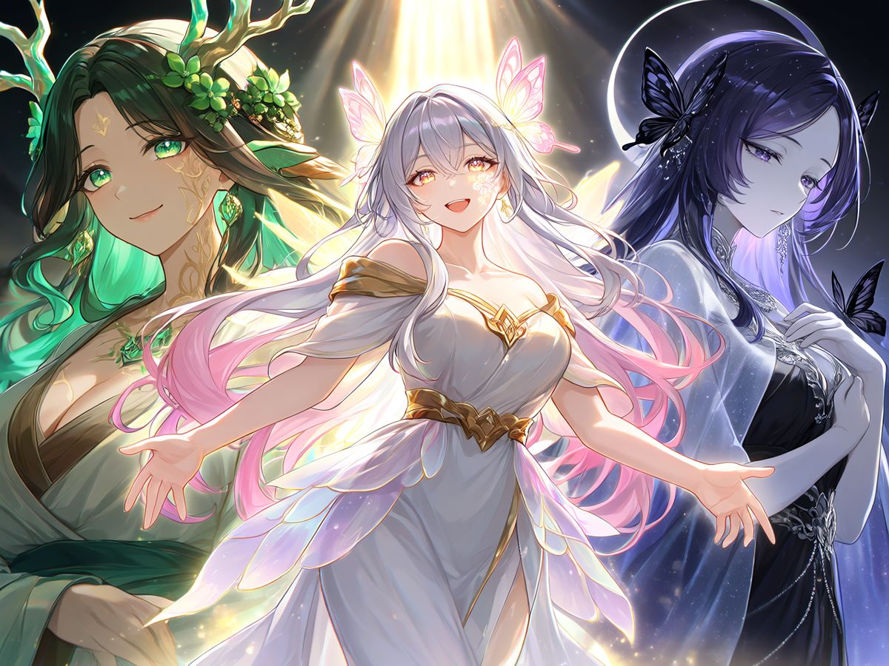
살아 숨 쉴 땅을 빚은 온화한 여신. 지금은 세계수 이그드라실이 되어 병든 대지를 천 년째 품고 있다.
서른이 넘는 종족을 낳고 만종의 맹약을 빚은 여신. 인외들은 아직도 그녀의 이름으로 아이를 축복한다.
모든 것의 끝을 맡은 여신. 지금 인간들은 그녀를 ‘생명의 여신’이라 부르며 섬긴다.
“장사로는 섞여도 된다.” 그 암묵적인 허락 하나로 버티는 도시.
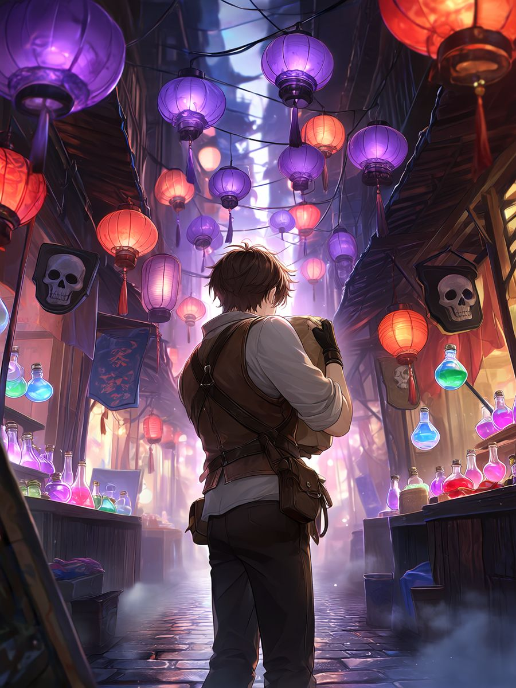
해가 지면 열리고 해가 뜨면 사라진다. 행운도, 저주도, 때로는 수명까지 사고판다.
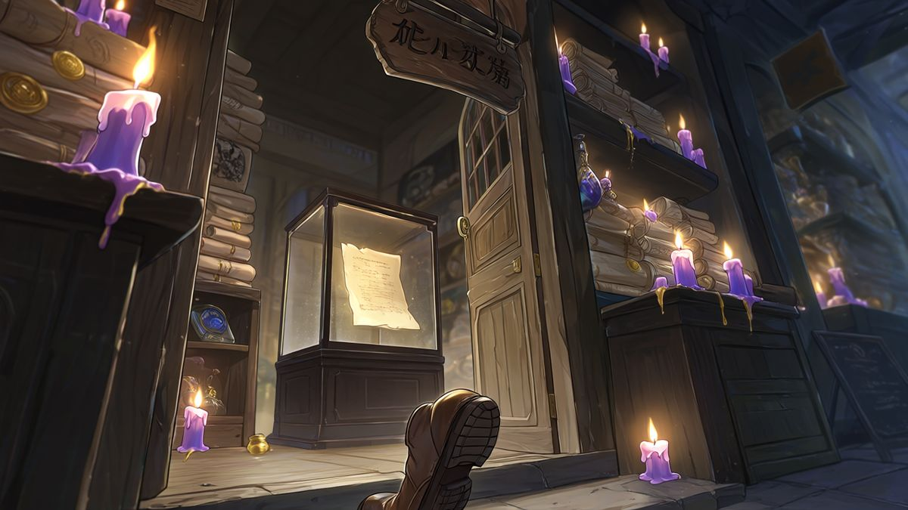
계약서와 인장을 다루는 시장에서 가장 오래된 가게. 진열장 속 양피지 한 장이 희미하게 빛난다.
인외를 받아 주는 유일한 길드. 삐걱이는 3층 목조 건물, 게시판의 의뢰서, 늘 끓는 국 냄새.
인류 최고의 길드. 대리석 로비와 표범 문장. 당신이 빚 때문에 팔려 온 곳이다.
흰 망토와 태양 문양. ‘생명의 여신’을 섬기며 인외에게 현상금을 건다.
“생명은 인간만이 온전하다.”갈 곳 없는 이들이 모이는 곳. 동료가 늘수록 빈방이 차고, 식당 메뉴가 늘고, 지붕이 고쳐진다.
의뢰를 따라 한 지역씩, 그 땅의 이종족을 만나러 간다. 번호는 길드 게시판이 이끄는 순서다.
서른 종족이 뒤섞인 교역 도시. 야시장 등불과 향신료 냄새.
발목까지 차오르는 물안개와 반딧불.
북소리와 함성, 모래 먼지.
은빛 나무 사이로 번지는 늑대 울음.
끝없이 늘어선 석상들의 도시.
우편탑과 짠 바닷바람.
물속에서 빛나는 산호 궁전.
달빛 거미줄 같은 은실이 드리운 숲.
붉은 달 아래 멈춰 버린 무도회장.
지지 않는 해와 얼음 궁전.
여우불과 붉은 도리이.
화산과 보물 둥지.
구름 위, 부서진 신전.
하늘을 가린 가지와 천 년의 잠.
세 여신이 처음 내려선 곳이라 전해진다. 아직 아무도 닿지 못했다.
옆으로 넘겨 보세요 →
에오라가 낳은 서른 종족 가운데 여정에서 만나게 될 열다섯. 모두 인간의 세상에서 저마다의 상처를 안고 산다.
계약과 인장에 밝은 밤의 종족.
교단은 ‘영혼을 훔치는 마물’이라 부르며 가장 먼저 사냥했다.
날렵한 감각과 밤눈.
귀족들 사이에선 목줄을 채운 ‘애완 수인’이 유행처럼 거래된다.
투명한 몸, 기분에 따라 바뀌는 빛깔.
핵이 ‘만능 약재’로 비싸게 팔려 동족 대부분이 사라졌다.
약속을 목숨처럼 여기는 전사 부족.
인간은 ‘말하는 짐승’이라 부르며 투기장에 사고판다.
무리와 달을 따르는 종족.
인간 귀족들은 해마다 ‘늑대 사냥 축제’를 연다.
돌의 몸, 마주친 것을 굳히는 눈.
괴물로 불리며 몇 번이고 사냥대가 보내졌다.
바람을 타는 하늘의 배달부.
화려한 깃털이 귀족 부인들의 모자 장식으로 팔린다.
물과 노래의 종족.
눈물이 진주가 되기에, 인간은 인어를 가두고 울린다.
달빛 은실로 옷을 짓는 장인들.
날개 가루가 젊음을 되찾는 약이라는 소문이 돈다.
밤의 옛 귀족.
‘흡혈귀 사냥’을 명분으로 가문들이 무너지고 영지가 나뉘었다.
얼음 궁전의 주인들.
사랑하면 녹는다는 전설과 함께, 궁전을 노리는 원정대가 끊이지 않는다.
천 년을 사는 여우, 환술의 달인.
요괴로 몰려 불과 부적에 쫓겨 왔다.
하늘을 다스리던 가장 오래된 종족.
‘용사’들의 사냥 끝에 대부분 세상을 떠났다.
한때 여신을 섬기던 사자들.
주인을 잃은 뒤, 뽑힌 날개가 비공정의 동력이 되었다.
숲과 함께 숨 쉬는 나무의 정령.
숲이 베어지고 불탈 때마다 함께 잠든다.
여정에서 몇 번이고 마주치게 될 얼굴들.
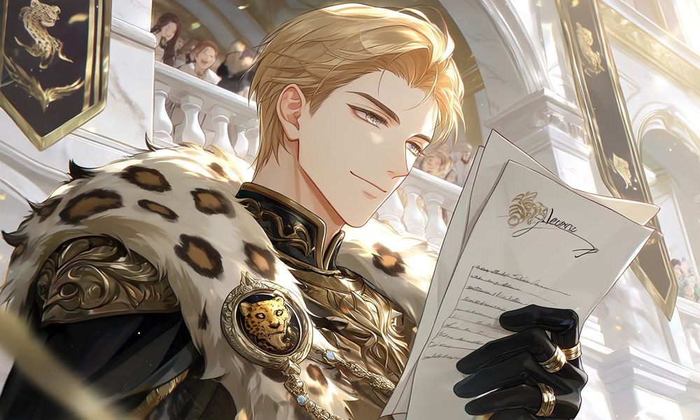
인류 최고 길드의 수장. 바벨하임 사람들은 그를 영웅이라 부른다.
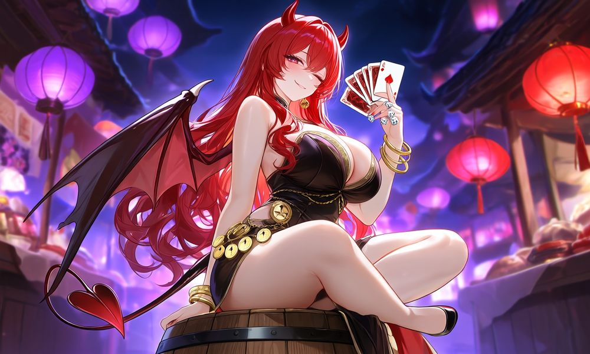
수명과 행운을 걸고 내기하는 걸 좋아하는 도박꾼 누나. “한 판 해, 귀염둥이.”
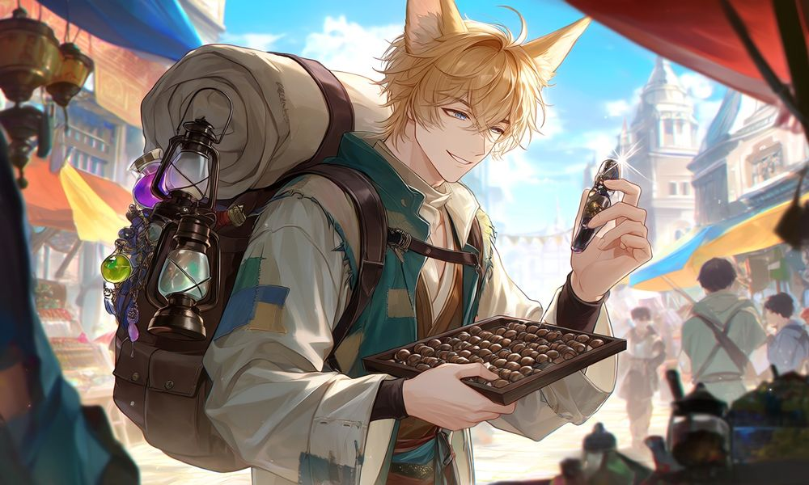
뭐든 파는 바가지 상인. 가끔은 물건보다 소문이 더 비싸다.
정해진 결말은 없다. 누구를 만나고, 누구의 손을 잡을지는 당신이 정한다.
여신이 남긴 금빛 창에 원하는 능력을 적는다. 그것이 당신의 힘이 된다.
마음을 나눈 이의 문장이 가슴에 새겨질 때마다 그 종족의 힘을 하나씩 얻는다.
경계에서 맹약까지. 억지로는 오르지 않는다.
의뢰마다 동료를 골라 데려간다. 남은 이들은 길드에서 당신을 기다린다.
예시일 뿐이에요. 무엇을 적을지는 당신 몫.